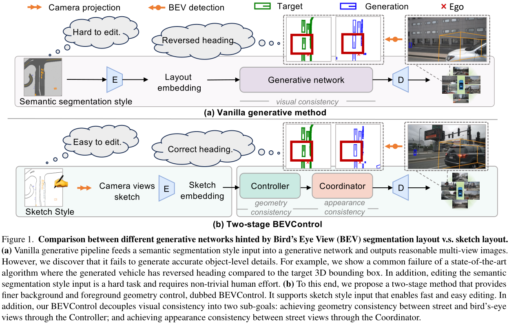
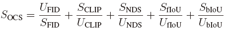
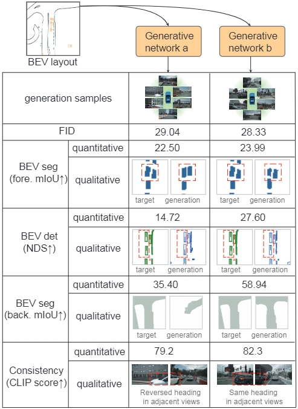
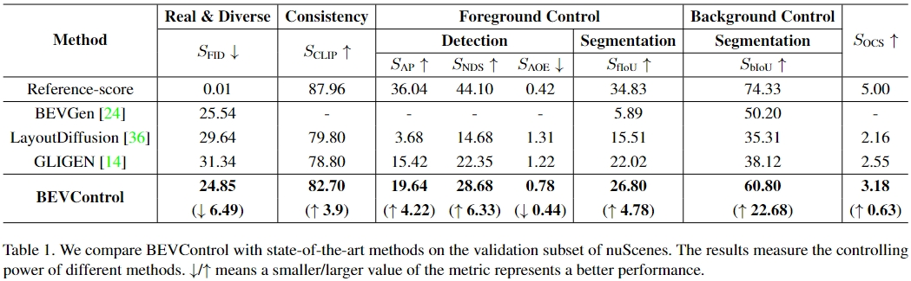

BEVControl: Accurately Controlling Street-view Elements with
Multi-perspective Consistency via BEV Sketch Layout
Kairui Yang1*, Enhui Ma1*, Jibin Peng1, Qing Guo2, Di Lin1†, Kaicheng Yu3,
1Tianjin University, 2IHPC and CFAR, Agency for Science, Technology and Research, Singapore, 3Westlake University
Abstract
Using synthesized images to boost the performance of perception models is a long-standing research challenge in computer vision. It becomes more eminent in visual-centric autonomous driving systems with multi-view cameras as some long-tail scenarios can never be collected. Guided by the BEV segmentation layouts, the existing generative networks seem to synthesize photo-realistic street-view images when evaluated with scene-level metrics like FID. However, once zoom-in, they usually fail to produce accurate foreground and background information and cannot be used in model training. To this end, we propose a two-stage generative method, dubbed BEVControl, that is capable to generate accurate foreground and background contents. It also supports sketch style input, which is more flexible for humans to edit. In addition, we propose a comprehensive multi-level evaluation protocol to fairly compare the quality of the generated scene, foreground object, and background geometry.
Method
BEVControl is a classic UNet structure consisting of an encoder and a decoder. They are composed of three modules stacked multiple times: controller, coordinator, and text cross-attention. We process all image features in the latent space, so the image features below specifically refer to those in the latent space.

Evaluation Metrics and Results
We propose a combinatorial metric to summarize the above metrics that measure the controlling power of the generative network from separate aspects. We use the Frechet Inception Distance (FID), CLIP score, the mean average precision (mAP), the nuScenes detection score (NDS), and the mean average orientation error (mAOE) to compute the combinatorial metric as the overall controlling score (OCS).



Reference
Please refer to our technical report for more information.
@article{yang2023bevcontrol,
title={BEVControl: Accurately Controlling Street-view Elements with
Multi-perspective Consistency via BEV Sketch Layout},
author={Yang, Kairui and Ma, Enhui and Peng, Jibing and Guo, Qing and Lin, Di and Yu, Kaicheng},
journal={arXiv},
year={2023}
}